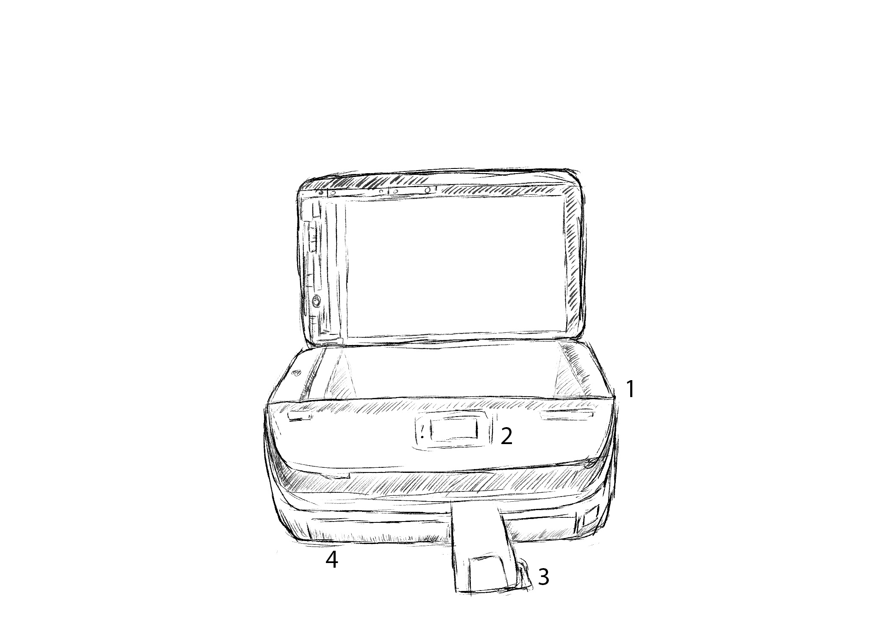

The Product and Interface 🖨
Sketches of the copier I studied are below. While this device is a printer, copier, scanner, and fax machine all in one, I chose to examine only the copier function. The lid opens up so the user can copy or scan a sheet of paper. There is also a touchpad screen in the front.


- The lid that opens for the user to place the desired copied sheet. The side the user wants to be copied should be placed face down on the screen.
- The touchpad screen to navigate and change the settings. Since this device can print, copy, scan, and fax, it was necessary for the user to select "Copy" as seen on the image on the right.
- This plastic piece ensures that the paper stays in place rather than falling to the ground once the paper has been copied.
- This tray holds the blank paper. To reload paper, the user can simply pull the tray out and insert more paper.